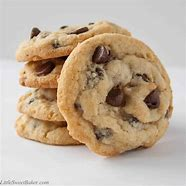

☾ Ciastka z drobinkami Czekolady ☾
ㅤ

Potrzebne rzeczy:
1 pełna szklanka mąki przennej, 1/3 łyżcezki soli
1/3 łyszeczka proszku do pieczenia
2 łyszki cukru winilinowego, 100g masła
80g cukru trzczinowego, 80g cukru białegi
1 jajko, 300g czekoladu (100g buałej, 100g mlecznej, 100g czranej)
ㅤ
Etapy Przyrządzania:
Piekarnik nagrzać do 160 stopni C. Przygotować 2 duże blaszki do pieczenia i wyłożyć je papierem do pieczenia (ewentualnie można użyć 1 blaszki i piec jedną porcję po drugiej).
Mąkę przesiać do miski, dodać sól, sodę lub proszek, cukier wanilinowy i wymieszać
W drugiej misce ubijać masło z dodatkiem cukru białego i trzcinowego przez około 5 minut. Dodać jajko i ubijać jeszcze przez około 5 minut.
Dodać sypkie składniki i zmiksować lub wymieszać.
Dodać posiekaną czekoladę (każdą kosteczkę pokroić na 4 kawałeczki) i wymieszać łyżką.
Nabierać po około 2 łyżki masy, uformować 18 kulek i ułożyć je na 2 blaszkach do pieczenia. Odrobinę spłaszczyć palcami wierzch każdej kulki.
Pierwszą blaszkę z ciastkami wstawić do piekarnika i piec przez 15 minut (aż brzegi ciastek zaczną się rumienić). Ciastka wyjmujemy z piekarnika gdy są jeszcze miękkie, a zastygają po ostudzeniu. Upiec drugą partię ciastek.